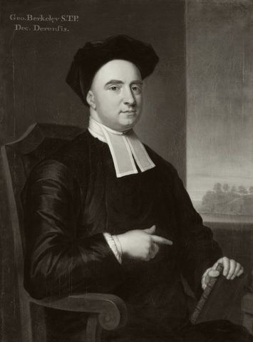

十八世纪爱尔兰哲学家、主教、教育家。他以一句"存在即被感知"掀起了近代哲学最激进的一场思想实验：如果物质不存在，世界会怎样？他相信，不是物质支撑了世界，而是心灵与上帝——这一唯心主义立场既是对洛克经验主义的彻底化，也是对牛顿机械宇宙观的神学回应。
贝克莱的思想是一条向心力的链条：从"存在即被感知"的唯心主义命题出发，否定物质实体，把世界还原为心灵中的观念；再推出精神实体（有限心灵与无限心灵），以科学批判回应牛顿哲学，最终以上帝论证收束。五个概念环环相扣——点击卡片进入详细解读。
事物之所以存在，就是因为它被心灵所感知。观念只能存在于心灵之中，而"事物"不过是观念的集合。没有感知者，就没有可感世界。
宇宙的基本实在不是物质，而是心灵与观念。物质实体是一个"无用的假说"——贝克莱要把它从洛克体系中彻底清除。
心灵不是观念，而是观念的能动者。有限精神（人）感知观念，无限精神（上帝）永恒地感知一切——这保证了世界即使无人观看也持续存在。
牛顿的"绝对空间"与"引力"被贝克莱视为危险的抽象。科学应当描述观念间的关系，而非发明看不见的实体。这是近代科学哲学的先声。
如果存在即被感知，那么世界之所以持续存在，是因为有一个永恒的心灵在感知它——那就是上帝。唯心主义最终成为捍卫信仰的护教学。
贝克莱二十八岁前已写完最重要的哲学著作。从《视觉新论》到《人类知识原理》再到对话体《海拉斯与斐洛诺斯对话三篇》，他的哲学以惊人的速度成型；晚年《阿耳西弗伦》与《西里斯》则转向护教与思想论。以下四部构成理解其思想的主干。
《海拉斯与斐洛诺斯对话三篇》是贝克莱最有亲和力的作品——对话体把艰涩的论证变成了一场有趣的辩驳。读完全书，你已能复述"存在即被感知"的来龙去脉。
这是贝克莱的学术重心。重点读第一卷（原理的正面陈述）与第二卷（对物质概念的批判）。注意他如何从洛克的经验主义"往前走一步"——不是退回到怀疑，而是走向上帝。
将贝克莱放回经验主义链条中对照：洛克→贝克莱→休谟。洛克相信物质实体，贝克莱说物质是抽象，休谟则说连"心灵实体"也不可知——三者步步紧逼，最后把经验主义逼到了怀疑论的尽头。
本站是为系统学习贝克莱哲学而做的导读。内容以概念为骨架、以著作为血肉——概念页展开每个核心命题的定义、哲学阐述、实例说明与延伸思考；著作页逐部解读核心论点、结构要点和关键段落。
贝克莱常被当作"胡思乱想"的哲学家——"世界只是我的想象？"——这是最常见的误解。事实上，贝克莱的论证比想象中精密得多，他是在为"世界是真实的、有秩序的、由上帝维系"而辩护，而非否认世界的真实。他的哲学是一场高超的思想手术：用经验主义的手术刀，切除唯物论与无神论的肿瘤。
理解贝克莱，是理解经验主义内部演进、科学与信仰张力、以及近代哲学"主体转向"的钥匙。本站力求呈现其思想的真实面貌——不因其唯心而回避，也不因其神学而简化。